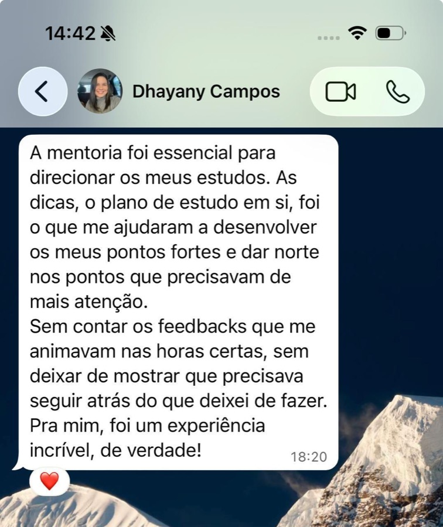
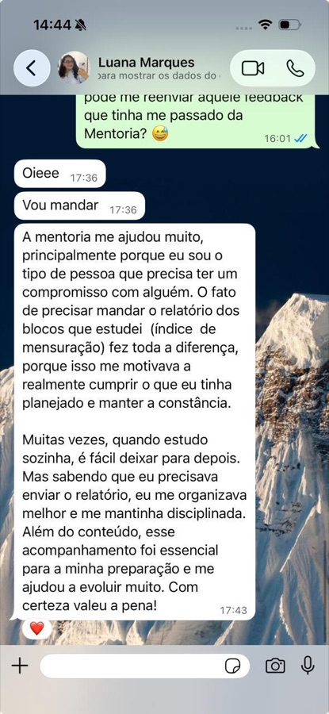
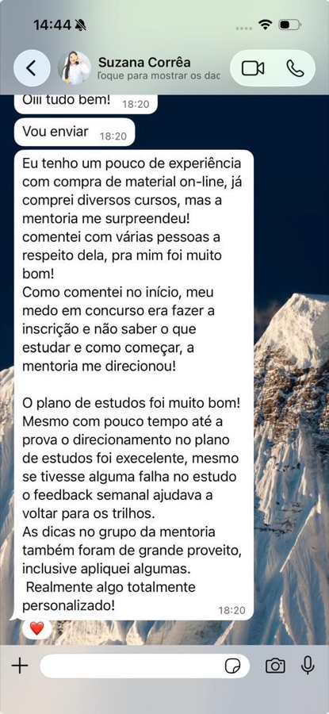
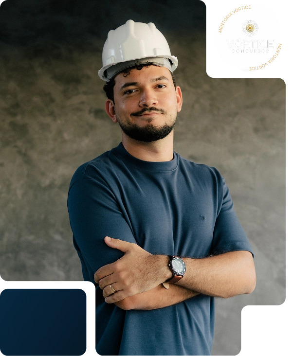

Você trabalha o dia inteiro
Sobram duas horas, e nem todo dia. O plano precisa caber nisso, não no fim de semana ideal que nunca acontece.
Mentoria individual para engenheiros e técnicos
Mentoria individual que transforma o edital do seu concurso em um plano do tamanho da sua semana, e diz, assunto por assunto, o que você pode deixar de fora.
Diagnóstico completo antes de qualquer decisão
Para quem é a mentoria Vórtice
Sobram duas horas, e nem todo dia. O plano precisa caber nisso, não no fim de semana ideal que nunca acontece.
Nunca fez concurso, não sabe por onde entrar e desconfia que vai estudar a coisa errada. O diagnóstico existe exatamente para isso.
Cumpre cronograma, faz questão, e a nota não sobe. Quase sempre o problema não é o esforço: é o que está dentro do plano.
E precisa menos de uma lista do que o edital pede do que de uma decisão sobre o que não vai dar tempo.
Qualquer concurso da área de engenharia e das carreiras técnicas, federal, estadual, municipal ou estatal, e qualquer banca.
Como funciona a mentoria
Uma anamnese de 14 seções sobre a sua rotina, o seu tempo real, como a sua atenção funciona e onde você trava. Mais duas provas anteriores da sua banca, resolvidas cronometradas na duração real da prova.
A sua nota prevista contra a sua nota real, bloco a bloco do edital. Daqui saem os seus pontos cegos, o que você achava que sabia e não sabe, e os seus medos à toa: a matéria de que você fugia e na qual já vai bem. Junto com isso: em quais questões você acertou de chute, em quais errou com certeza, e se o seu erro é de conteúdo ou de desatenção. Porque a solução para cada um é completamente diferente.
Assunto por assunto do edital, o que sai do seu plano. Onde não vale fazer resumo. Onde não vale fazer questão. É a única entrega deste mercado que devolve tempo em vez de cobrar mais.
O seu cronograma é construído assunto a assunto dentro da plataforma, respeitando o seu tempo real e o calendário de lançamento das aulas. Toda semana os seus números são olhados. E o plano é revisto ao longo da preparação: matéria cortada volta quando você ganha horas, matéria que emperrou ganha mais tempo.
Do primeiro dia até a prova, o plano é seu, e ele muda quando a sua vida muda.
Pra ficar claro
Você já tentou tudo isso. É por isso que você está aqui.
Como a sua evolução é acompanhada
É lá que dá para ver, no fim da semana, o que foi feito e o que não foi.
Toda semana os seus números são olhados. Quando alguma coisa sai do lugar, quem muda é o plano, não a cobrança em cima de você. E se precisar falar, é direto no WhatsApp: sem agenda para marcar e sem call para remarcar.
Quero meu diagnósticoEncontro quinzenal ao vivo
A cada quinze dias, um encontro ao vivo sobre como estudar: técnicas de estudo, metodologia de revisão, leitura de questão e mentalidade de aprovação. Não é aula de conteúdo e não é acompanhamento, o acompanhamento é individual, e acontece na plataforma e no WhatsApp.
E ainda entra na mentoria
Aulas, PDFs e banco de questões direcionados à prova que você pretende fazer, selecionados a partir do edital e do que a sua banca realmente cobra no seu cargo. Faz parte da mentoria: você não precisa comprar curso por fora.
Quando o edital do seu concurso for publicado, você recebe a leitura dos principais pontos e o seu plano é reajustado ao que efetivamente vai cair.
Condição especial em uma das principais plataformas de questões do país.
Conteúdo complementar sobre retenção, revisão e recuperação do que você estudou.
Comunicados e informações importantes sobre a sua preparação e sobre os concursos da sua área.
Você entra, começa o diagnóstico e conhece a plataforma por dentro. Se concluir que não é para você, devolvemos 100% do valor.
Veja a experiência de quem já estudou com acompanhamento







Quem será o seu mentor
Engenheiro Mecânico, pós-graduando em Neurociências e Comportamento e mestrando em Engenharia Elétrica e Computação.
Além da formação acadêmica, Jediel conhece na prática o caminho de preparação para concursos: foi aprovado em 1º lugar em Engenharia Mecânica na Itaipu Binacional, a maior usina produtora de energia hidrelétrica do mundo.
Na Vórtice, usa essa experiência para acompanhar candidatos das áreas técnicas e de engenharia, em concursos de qualquer banca.
Quanto custaria ter acesso a tudo isso separadamente
Você não vai pagar R$ 3.553.
Perguntas frequentes
Sim, mas ele é a última etapa, não a primeira. Antes do cronograma vem o diagnóstico: a anamnese e duas provas anteriores da sua banca, resolvidas cronometradas. Só depois de ler o seu resultado, assunto por assunto, é que o plano é montado dentro da plataforma, no tamanho da sua semana. Não é um cronograma genérico distribuído para a turma inteira.
Depende do plano que você escolher: trimestral, semestral ou anual. Em todos eles a estrutura é a mesma, diagnóstico, painel, mapa de corte, plano na plataforma e os encontros quinzenais ao vivo; o que muda é por quanto tempo você fica acompanhado. Na conversa no WhatsApp a gente vê qual faz sentido para a distância até a sua prova.
Logo no começo você resolve duas provas anteriores da sua banca, cronometradas na duração real. A correção é questão a questão: onde você acertou de chute, onde errou por conteúdo e onde errou por desatenção. É desse cruzamento que sai o seu mapa de corte, e é por isso que a mentoria consegue dizer o que você pode deixar de estudar.
Está. O material do Estratégia direcionado para a sua prova faz parte da mentoria, aulas, PDFs e banco de questões do seu cargo, selecionados a partir do edital e do que a sua banca cobra. Você não precisa comprar curso por fora. Também entra um cupom com condição especial no TEC Concursos.
Não. A mentoria atende tanto quem está começando do zero quanto quem já estuda e está travado. É justamente o que o diagnóstico resolve: entender de onde você parte, quanto tempo tem e o que precisa mudar antes de montar qualquer coisa.
Serve. O que a mentoria faz é ler o edital do seu concurso e as provas anteriores da sua banca, federal, estadual, municipal ou estatal. É o mesmo processo, aplicado ao seu cargo.
Direto, pelo WhatsApp. Não tem agenda para marcar nem call para remarcar: você manda, ele responde, e toda semana os seus números são olhados dentro da plataforma.
Quando o edital do seu concurso for publicado, você recebe a análise dos principais pontos e o seu plano é reajustado ao que efetivamente vai cair, assunto por assunto. Essa é uma das razões de começar antes do edital: quando ele sai, você já tem base, só precisa acertar a mira.
Você tem 7 dias de garantia. Nesse período você entra, começa o diagnóstico e conhece a plataforma por dentro. Se concluir que não é para você, é só pedir o reembolso dentro dos 7 dias e devolvemos 100% do valor, sem precisar justificar nada. O risco desses primeiros dias é nosso.
Mentoria individual
Fale com a Vórtice e descubra, antes de decidir qualquer coisa, o que você já sabe e o que pode deixar de estudar.
Quero meu diagnóstico